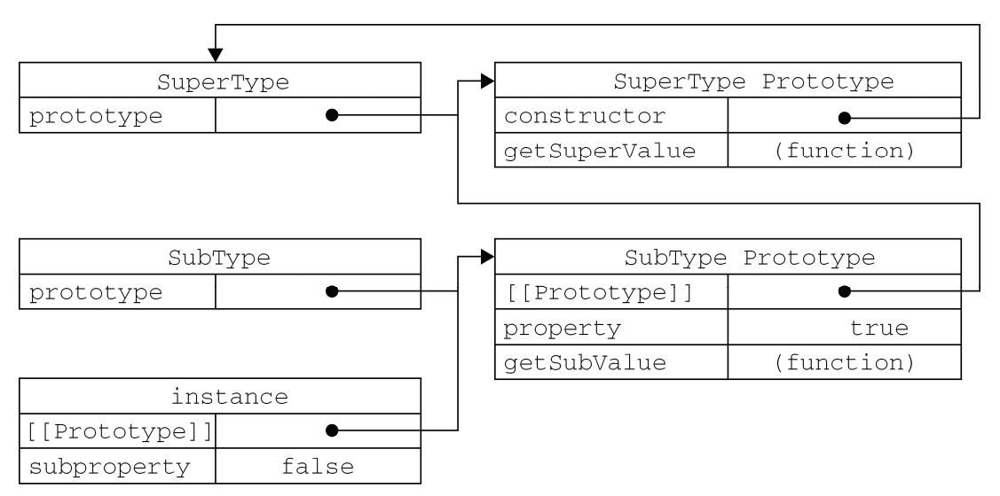

JavaScript 继承方法总结
上一篇博文讲了如何创建对象，现在来看看JavaScript是如何实现继承的。
原型链
首先，JavaScript实现继承的主要方法是原型链。其基本思想是利用原型让一个引用类型继承另一个引用类型的属性和方法。简单点说，就是让原型对象等于另一个类型的实例。此时原型对象将包含一个指向另一个对象原型的指针，另一个对象的原型中也包含指向另一个构造函数的指针。如果另一个原型又是另一个原型的实例，上述关系依然成立。如此层层递进，就构成了实例与原型链的链条。
看下面的示例代码。
function SuperType(){
this.property = true;
}
SuperType.prototype.getSuperValue = function(){
return this.property;
}
function SubType(){
this.SubValue = false;
}
//继承了SuperType
SubType.prototype = new SuperType();
SubType.prototype.getSubValue = function(){
return this.SubValue;
}
var instance = new SubType();
console.log(instance.getSuperValue()); //true
以上代码重写了SubType的原型对象，代之以SuperType的实例。因此，原来存在于SuperType实例中所有的属性和方法，现在也在SubType的原型链中了。他们的关系如下图所示。
instance指向SubType的原型，SubType的原型又指向SuperType的原型。搜索过程的以沿着原型链向上，直到原型链末端( 即Object.prototype )。可用instanceof确定实例和原型的关系。
注意：给原型添加或替换原型链上的方法一定要放在替换原型的语句之后。不能用对象字面量创建原型方法，因为它相当于重写了原型。
借用构造函数
使用原型链实现继承存在一个严重的问题，就是原先的实例属性现在顺理成章地变成了原型属性，这会导致原型属性包含引用类型。因此我们很少单独使用原型链实现继承。借用构造函数可以解决这个问题。
借用构造函数就是使用apply()或call()在新创建的对象上执行构造函数，如下所示。
function SuperType(){
this.colors = ["r","g","b"];
}
function SubType(){
SuperType.call(this);
}
var ins1 = new SubType();
ins1.colors.push("w");
console.log(ins1.colors); //["r","g","b","w"]
console.log(ins2.colors); //["r","g","b"]
借用构造函数方法，在超类型的原型中定义的方法，在子类型中是不可见的。
组合继承
所谓组合继承，就是将原型链和借用构造函数的技术组合到一起。通过原型链实现对原型属性和方法的继承，通过借用构造函数实现对实例属性的继承。这样，既通过在原型上定义方法实现了函数复用，又能够保证每个实例都有它自己的属性。例如：
function SuperType(name){
this.name = name;
this.colors = ["red", "blue", "green"];
}
SuperType.prototype.sayName = function(){
console.log(this.name);
};
function SubType(name, age){
//继承属性
SuperType.call(this, name); //第一次调用构造函数
this.age = age;
}
//继承方法
SubType.prototype = new SuperType(); //第二次调用构造函数
SubType.prototype.constructor = SubType;
SubType.prototype.sayAge = function(){
console.log(this.age);
};
var instance1 = new SubType("Nicholas", 29);
instance1.colors.push("black");
console.log(instance1.colors); //"red,blue,green,black"
instance1.sayName(); //"Nicholas";
instance1.sayAge(); //29
var instance2 = new SubType("Greg", 27);
console.log(instance2.colors); //"red,blue,green"
instance2.sayName(); //"Greg";
instance2.sayAge(); //27
寄生组合式继承
组合继承最大的问题就是无论什么情况下，都会调用两次超类型构造函数：一次是在创建子类型原型的时候，另一次是在子类型构造函数内部。因此有两组name和colors属性：一组在实例上，一组在SubType原型中。这就是调用两次 SuperType构造函数的结果。
所谓寄生组合式继承，即通过借用构造函数来继承属性，通过原型链的混成形式来继承方法。其背后的基本思路是：不必为了指定子类型的原型而调用超类型的构造函数，我们所需要的无非就是超类型原型的一个副本而已。本质上，就是使用寄生式继承来继承超类型的原型，然后再将结果指定给子类型的原型。寄生组合式继承的基本模式如下所示。
function inheritPrototype(subType, superType){
var prototype = object(superType.prototype); //创建对象
prototype.constructor = subType; //增强对象
subType.prototype = prototype; //指定对象
}
function SuperType(name){
this.name = name;
this.colors = ["red", "blue", "green"];
}
SuperType.prototype.sayName = function(){
console.log(this.name);
};
function SubType(name, age){
SuperType.call(this, name);
this.age = age;
}
inheritPrototype(SubType, SuperType);
SubType.prototype.sayAge = function(){
console.log(this.age);
};
这个例子的高效率体现在它只调用了一次 SuperType 构造函数，并且因此避免了在 SubType.prototype 上面创建不必要的、多余的属性。